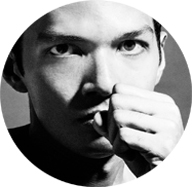

Erin Dismeier was a student newscaster for KBIA in 2013.
She has covered a wide array of regional news from Missouri Congressional bills to local government actions.
-

Naveen Mahadevan is a freelance photojournalist now based in Chennai.
He specializes in studio and documentary portraiture.
Mahadevan earned his masters degree in photojournalism from the Missouri School of Journalism.
-

Kevin Cook won first and second places in Interpretive Project and Feature categories at College Photographer of the Year in 2013.
Cook recieved his masters degree in photojournalism from the MU School of Journalism.
Benjamin Hoste earned his masters degree from the MU School of Journalism.
Hoste said his work is often driven by an interest in identity and how it interrelates to a given geography.
Hoste is now a non-fiction, documentary photographer based in Brooklyn, NY.